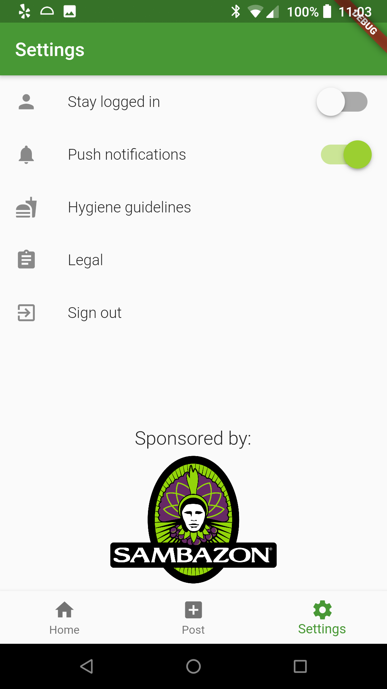
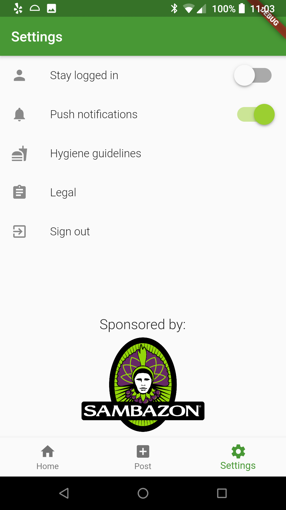

Extra Eats
This is my design notebook for ENGR 110: Community Based Engineering Design, and our project is Extra Eats, a cross-platform food sharing app developed by the SCU Sustainability Center. The application is built with Flutter, and our API on a Node.js application deployed to Heroku.
Partners
For this project, I am on the backend team with Aastha, Sreya, Matt, and Francesca. We are working alongside by a design team of five other students: Jazzy Benes, Brandon Booth, Akash Ravindran, Shikkiko Washington, and Elissa Yang. We're working with a team at the SCU Center for Sustainability headed by a fellow student Nate Redinho, under the director Lindsay Kalkbrenner. The Center for Sustainability describes themselves as "the focal point for Santa Clara University's Justice and Sustainability Strategic Priority, which contributes to creating a more just, humane, and sustainable world."
This project was previously worked on by last quarter's ENGR 110 team, Spencer Nguyen, Alan Wong, Emily Zhang, and Jonny Lin.
 
